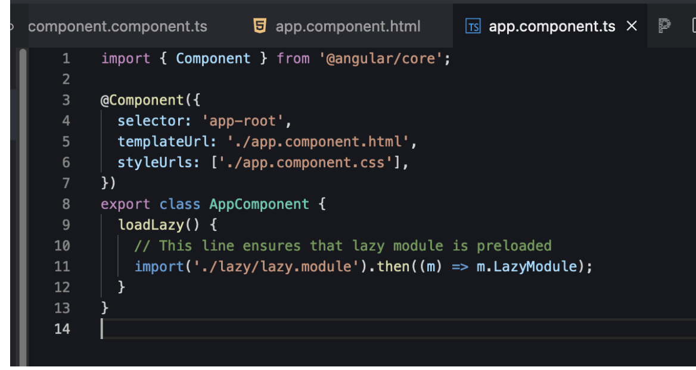

Lazy loading is a design pattern that allows Angular to load modules, components, or services only when they are needed, rather than at the initial load. This reduces the initial load time and improves the application's performance. Here’s how you can implement and understand lazy loading in Angular:
To lazy load a module, you typically use Angular’s routing. However, you can also load a module programmatically.
You can load a component lazily by using Angular's dynamic component loader.
Services in Angular are typically singleton and provided at the root level. To lazy load a service, you can use Angular's injector.

Preloading strategies are used to load modules in the background after the application has been bootstrapped.
Lazy loading in Angular works by loading modules asynchronously using the dynamic import syntax. When a route that requires a lazy-loaded module is activated, Angular will load the module and its associated dependencies on demand
Module Federation allows loading code from another bundle at runtime. It is commonly used in microfrontend architectures.
You can achieve lazy loading without routing by dynamically importing modules or components and manually injecting them into the application.
There are three different methods to utilize a component in an Angular application.
Advantages and disadvantages of dynamically loading components:
Advantages:
Disadvantages:
By default, Angular loads all modules and their associated resources when the application is launched. However, with lazy loading, you can split your application into feature modules and load them dynamically only when they are needed. This way, you can reduce the initial bundle size and load only the necessary code for the current route or feature.
To implement lazy loading in Angular, you need to follow these steps: